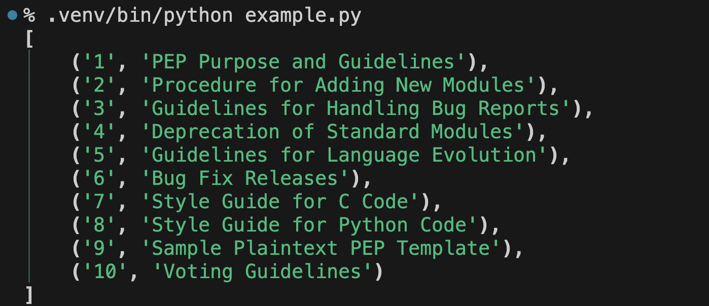

PEP 723（Inline script metadata）が拓く世界。Pythonスクリプトに必要な仮想環境をツールにおまかせできるんです！
プレビュー版：PEP 723（Inline script metadata）が拓く世界。Pythonスクリプトに必要な仮想環境をツールにおまかせできるんです！
- Event:
みんなのPython勉強会#108 LT
- Presented:
2024/09/19 nikkie
このLTは
2024/09/27(金) 28(土) に有明で開催される PyCon JP 2024 のトークのプレビューです
金曜 15:50〜 20F #pyconjp_1 僕と握手🤝
お届けする内容は、ちょっとした スクリプトを書くシーン で皆さんに使ってもらえたら嬉しいです
サンプルスクリプト
PEP＝ Python Enhancement Proposal （Pythonの機能提案文書）
PEPの一覧をJSON形式で取得できると知ったのでやってみたい
このライブラリを使おうかな
httpx ：HTTPクライアント（金曜 16:40〜 20F #pyconjp_2）
rich ：ターミナルにリッチなテキストで出力
試す際はお好みのライブラリに読み替えください
PEPの一覧をJSON形式で取得するスクリプト
example.py
import httpx
from rich.pretty import pprint
resp = httpx.get("https://peps.python.org/api/peps.json")
data = resp.json()
pprint([(k, v["title"]) for k, v in data.items()][:10])
スクリプトができたからといって実行すると
$ python example.py
Traceback (most recent call last):
File "/.../example.py", line 1, in <module>
import httpx
ModuleNotFoundError: No module named 'httpx'ライブラリのインストール が必要です
仮想環境にライブラリをインストールしてから動かす
$ python -V
Python 3.12.6
$ python -m venv .venv --upgrade-deps
$ .venv/bin/python -m pip install httpx rich
$ .venv/bin/python example.py仮想環境で実行したスクリプトの出力
実は、私たちが仮想環境を作らなくてもいい んです！
タイトルにある「PEP 723（Inline script metadata）」
スクリプトにコメントとしてメタデータを書き、それをサポートしたツールで実行
Inline script metadata（冒頭のコメント）
example.py（更新版）
# /// script
# dependencies = ["httpx", "rich"]
# ///
import httpx
from rich.pretty import pprint
resp = httpx.get("https://peps.python.org/api/peps.json")
data = resp.json()
pprint([(k, v["title"]) for k, v in data.items()][:10])
Inline script metadataをサポートするツールで実行
$ pipx run example.py$ uv run example.py$ hatch run example.py$ pdm run example.pyツールが仮想環境を用意して実行！
% uv run example.py
Reading inline script metadata from: example.py
Installed 11 packages in 23ms
[
│ ('1', 'PEP Purpose and Guidelines'),
│ ('2', 'Procedure for Adding New Modules'),
│ ('3', 'Guidelines for Handling Bug Reports'),
│ ('4', 'Deprecation of Standard Modules'),
│ ('5', 'Guidelines for Language Evolution'),
│ ('6', 'Bug Fix Releases'),
│ ('7', 'Style Guide for C Code'),
│ ('8', 'Style Guide for Python Code'),
│ ('9', 'Sample Plaintext PEP Template'),
│ ('10', 'Voting Guidelines')
]Inline script metadataをサポートするツールがスクリプトを実行するとき
ツールがmetadataを読む
ツールが metadataを満たす仮想環境を用意 （dependencies など）
ツールが2の仮想環境でスクリプトを実行
天才！ ありがとう〜！
このトークで伝えたいこと
Pythonスクリプトを書くとき、Inline script metadataをぜひ使って みて！
開発者が仮想環境の管理から解放されます！
スクリプトが依存するライブラリをコメントとして書き、サポートしたツールを使うだけ
続きは9/27(金)のPyCon JP 2024にて
ご清聴ありがとうございました
お前、誰だったのよ？ ― nikkieでした
ユーザベースの機械学習エンジニア（We're hiring!）
みんなのPython勉強会 スタッフ・4代目LT王子
小さなOSSの開発が好き：代表作はSphinx拡張 sphinx-new-tab-link